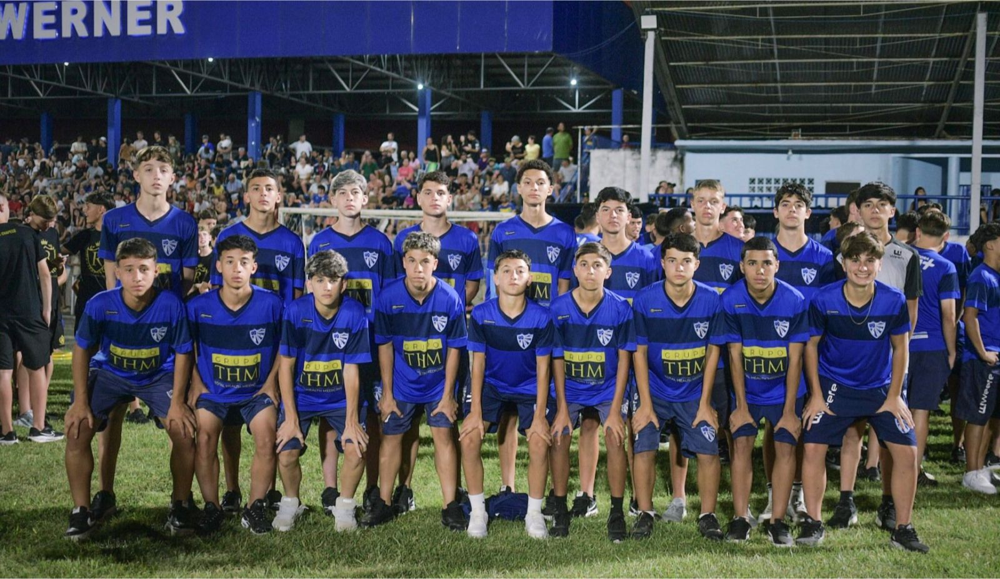

O município de Maravilha-SC deu início oficial à 10ª Copa Maravilha, um dos torneios mais respeitados do calendário de base no Sul do Brasil. O evento reúne grandes projetos de formação e atletas em ascensão (confira os detalhes da abertura no portal WH3).

O meio-campista Ryan Coelho é um dos pilares da equipe Sub-15 do E.C. Cruzeiro-RS para esta edição. O registro desta participação integra o arquivo da rodada disputada em janeiro de 2026.
BASE ESTRELADA EM CAMPO
Comandando o meio-campo, Ryan busca consolidar sua minutagem na temporada. Acompanhe os bastidores e informações exclusivas da delegação no Instagram da Base Estrelada.
Agenda da Rodada #01 (26/01)
- 15h00 | SUB-17: Ítalo Brasileiro x Cruzeiro-RS
- 16h30 | SUB-15: Cruzeiro-RS x Amigos da Bola (Campo AS Amizade)
O FutTalento preserva registros editoriais da trajetória esportiva de Ryan, sujeitos à revisão das fontes e dos responsáveis.